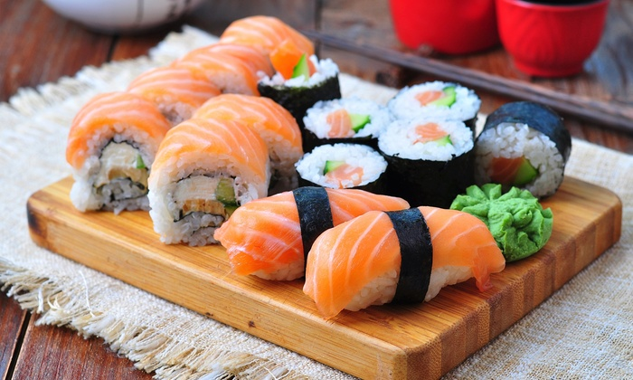
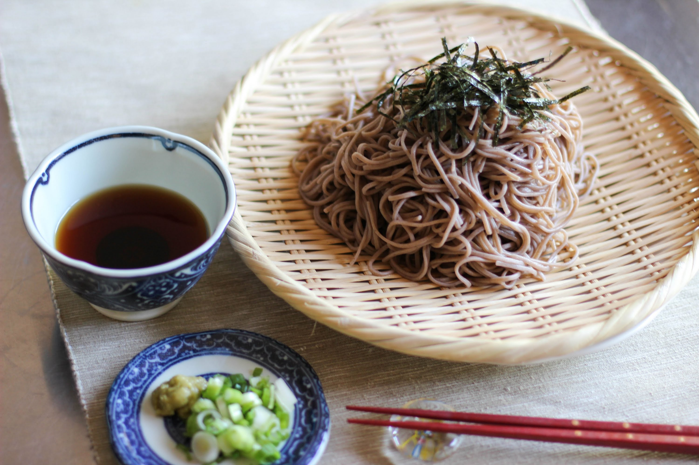
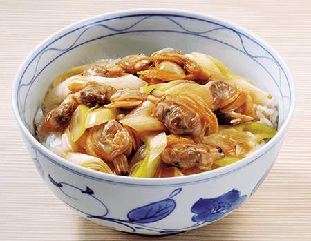
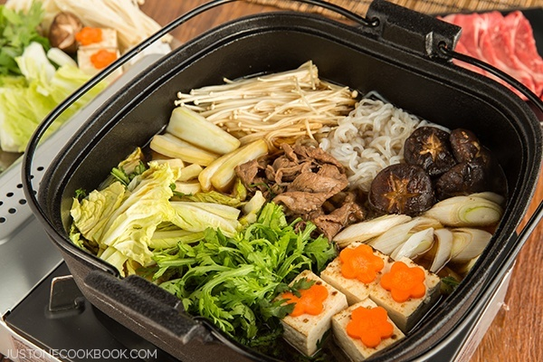

Visit Japan
Visit Japan
View below for Japanese Cuisine
Japan is culturally diverse and known for its great food. It embodies the artistic side of Japan, as well as the beauty and the great tastes from the different sub-cultures.
Tokyo Signature Dishes
Sushi
Sushi has grown into a popular cuisine the world over. From nigiri-zushi, or bite-sized balls of vinegar-flavored rice topped with pieces of fresh seasonal seafood, to chirashi-zushi, or a plate of this rice covered with a variety of ingredients, the eye-pleasing sushi is a tradition of Japan with universal appeal.Sushi can be prepared with either brown or white rice. It is often prepared with raw seafood, but some common varieties of sushi use cooked ingredients, and many other sorts are vegetarian. Sushi is often served with pickled ginger, wasabi, and soy sauce. Daikon radish is popular as a garnish.Sushi is often confused with sashimi, a related Japanese dish consisting of thinly sliced raw fish or occasionally meat, and an optional serving of rice. Sashimi is served as slices, unlike sushi, which is served as oval-shaped rolls.
Click the image for further information
Soba
In Japan, the word can refer to any thin noodle. Soba noodles are served either chilled with a dipping sauce, or in hot broth as a noodle soup.In Japan, soba noodles are served in a variety of settings throughout Japan, but are also served by expensive specialty restaurants. Markets sell dried noodles and men-tsuyu, or instant noodle broth, to make home preparation easy. There are a wide variety of dishes, both hot for winter and cold for summer, using these noodles.Soba is a good nutritional addition to a diet reliant on white rice and wheat flour. Thiamine, missing from white rice, is present in soba; eating thiamine (vitamin B1) can help prevent the disease beriberi. Soba contains all eight essential amino acids, including lysine, which is lacking in wheat flour. The tradition of eating soba arose in the Edo period.
Click the image for further information
Fukagawa-Meshi
Fukagawa-Meshi is a bowl of rice topped with clams and Japanese long onions cooked in miso. The name Fukagawa comes from a town in Koto-ku, a ward in eastern Tokyo. During the Edo period (1603-1867), Fukagawa was a prosperous fishing town where many earned a living catching fish and clams, or gathering laver. The coastal waters around Fukagawa were once abundant in asari—Japanese littleneck clams—considered the area’s specialty. Fukagawa meshi is as easy to prepare as it is delicious and nutritious, and for the locals, this bowl of asari and rice was a daily treat—a kind of “fast food” for busy fishermen who enjoyed a quick bowl before casting off. These days there is another type of Fukagawa meshi in which clams are cooked with rice. Both types, however, remain familiar favorites and count among Tokyo’s culinary stars.
`Click the image for further information
Ramen
Ramen is a noodle soup dish that was originally imported from China and has become one of the most popular dishes in Japan in recent decades. Ramen are inexpensive and widely available, two factors that also make them an ideal option for budget travelers. Ramen restaurants, or ramen-ya, can be found in virtually every corner of the country and produce countless regional variations of this common noodle dish. Ramen is a popular fast food that makes for an affordable meal in the city. There are types of ramen restaurants where you choose ramen you want at a vending machine by pressing the button to get a ticket, then give it the chef and wait for the ramen to be delivered to your table.
Click the image for further information

Sukiyaki
Sukiyaki is a meat dish particular to Japan, where thinly sliced meat (mainly beef) is prepared by cooking and stewing it in a shallow cast-iron pot. Ingredients other than meat are also added including leeks, Welsh onions, grilled tofu, chrysanthemum greens, shirataki, and shiitake mushrooms. Soy sauce and sugar are used for seasonings. The cooking methods differ between Kanto-style and Kansai-style. It is usually cooked right at the table in a Japanese hot pot style (nabemono). Like most Japanese foods, Sukiyaki has some cooking variations. The most common ingredients used in Tokyo include vegetables, tofu and negi, all of which are added to the beef and cooked, mixed with soy sauce, sugar and mirin. To soak up the broth, boiled udon or soba is sometimes added at the end.
Click the image for further information
Expand for a Back to Top Link
Back to TopCreated by - Prateek Bansal
on Friday June 9 2017
All content, unless otherwise stated, is the property of Prateek Bansal